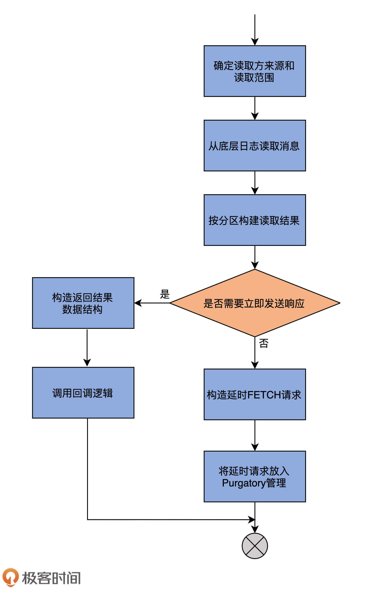

- 00 导读 构建Kafka工程和源码阅读环境、Scala语言热身.md
- 00 开篇词 阅读源码，逐渐成了职业进阶道路上的“必选项”.md
- 00 重磅加餐 带你快速入门Scala语言.md
- 01 日志段：保存消息文件的对象是怎么实现的？.md
- 02 日志（上）：日志究竟是如何加载日志段的？.md
- 03 日志（下）：彻底搞懂Log对象的常见操作.md
- 04 索引（上）：改进的二分查找算法在Kafka索引的应用.md
- 05 索引（下）：位移索引和时间戳索引的区别是什么？.md
- 06 请求通道：如何实现Kafka请求队列？.md
- 07 SocketServer（上）：Kafka到底是怎么应用NIO实现网络通信的？.md
- 08 SocketServer（中）：请求还要区分优先级？.md
- 09 SocketServer（下）：请求处理全流程源码分析.md
- 10 KafkaApis：Kafka最重要的源码入口，没有之一.md
- 11 Controller元数据：Controller都保存有哪些东西？有几种状态？.md
- 12 ControllerChannelManager：Controller如何管理请求发送？.md
- 13 ControllerEventManager：变身单线程后的Controller如何处理事件？.md
- 14 Controller选举是怎么实现的？.md
- 15 如何理解Controller在Kafka集群中的作用？.md
- 16 TopicDeletionManager： Topic是怎么被删除的？.md
- 17 ReplicaStateMachine：揭秘副本状态机实现原理.md
- 18 PartitionStateMachine：分区状态转换如何实现？.md
- 19 TimingWheel：探究Kafka定时器背后的高效时间轮算法.md
- 20 DelayedOperation：Broker是怎么延时处理请求的？.md
- 21 AbstractFetcherThread：拉取消息分几步？.md
- 22 ReplicaFetcherThread：Follower如何拉取Leader消息？.md
- 23 ReplicaManager（上）：必须要掌握的副本管理类定义和核心字段.md
- 24 ReplicaManager（中）：副本管理器是如何读写副本的？.md
- 25 ReplicaManager（下）：副本管理器是如何管理副本的？.md
- 26 MetadataCache：Broker是怎么异步更新元数据缓存的？.md
- 27 消费者组元数据（上）：消费者组都有哪些元数据？.md
- 28 消费者组元数据（下）：Kafka如何管理这些元数据？.md
- 29 GroupMetadataManager：组元数据管理器是个什么东西？.md
- 30 GroupMetadataManager：位移主题保存的只是位移吗？.md
- 31 GroupMetadataManager：查询位移时，不用读取位移主题？.md
- 32 GroupCoordinator：在Rebalance中，Coordinator如何处理成员入组？.md
- 33 GroupCoordinator：在Rebalance中，如何进行组同步？.md
- 特别放送（一）经典的Kafka学习资料有哪些？.md
- 特别放送（三）我是怎么度过日常一天的？.md
- 特别放送（二）一篇文章带你了解参与开源社区的全部流程.md
- 特别放送（五） Kafka 社区的重磅功能：移除 ZooKeeper 依赖.md
- 特别放送（四）20道经典的Kafka面试题详解.md
- 结束语 源码学习，我们才刚上路呢.md
24 ReplicaManager（中）：副本管理器是如何读写副本的？
你好，我是胡夕。上节课，我们学习了ReplicaManager类的定义和重要字段，今天我们接着学习这个类中的读写副本对象部分的源码。无论是读取副本还是写入副本，都是通过底层的Partition对象完成的，而这些分区对象全部保存在上节课所学的allPartitions字段中。可以说，理解这些字段的用途，是后续我们探索副本管理器类功能的重要前提。
现在，我们就来学习下副本读写功能。整个Kafka的同步机制，本质上就是副本读取+副本写入，搞懂了这两个功能，你就知道了Follower副本是如何同步Leader副本数据的。
副本写入：appendRecords
所谓的副本写入，是指向副本底层日志写入消息。在ReplicaManager类中，实现副本写入的方法叫appendRecords。
放眼整个Kafka源码世界，需要副本写入的场景有4个。
- 场景一：生产者向Leader副本写入消息；
- 场景二：Follower副本拉取消息后写入副本；
- 场景三：消费者组写入组信息；
- 场景四：事务管理器写入事务信息（包括事务标记、事务元数据等）。
除了第二个场景是直接调用Partition对象的方法实现之外，其他3个都是调用appendRecords来完成的。
该方法将给定一组分区的消息写入到对应的Leader副本中，并且根据PRODUCE请求中acks设置的不同，有选择地等待其他副本写入完成。然后，调用指定的回调逻辑。
我们先来看下它的方法签名：
def appendRecords(
timeout: Long, // 请求处理超时时间
requiredAcks: Short, // 请求acks设置
internalTopicsAllowed: Boolean, // 是否允许写入内部主题
origin: AppendOrigin, // 写入方来源
entriesPerPartition: Map[TopicPartition, MemoryRecords], // 待写入消息
// 回调逻辑
responseCallback: Map[TopicPartition, PartitionResponse] => Unit,
delayedProduceLock: Option[Lock] = None,
recordConversionStatsCallback:
Map[TopicPartition, RecordConversionStats] => Unit = _ => ())
: Unit = {
......
}
输入参数有很多，而且都很重要，我一个一个地说。
- timeout：请求处理超时时间。对于生产者来说，它就是request.timeout.ms参数值。
- requiredAcks：是否需要等待其他副本写入。对于生产者而言，它就是acks参数的值。而在其他场景中，Kafka默认使用-1，表示等待其他副本全部写入成功再返回。
- internalTopicsAllowed：是否允许向内部主题写入消息。对于普通的生产者而言，该字段是False，即不允许写入内部主题。对于Coordinator组件，特别是消费者组GroupCoordinator组件来说，它的职责之一就是向内部位移主题写入消息，因此，此时，该字段值是True。
- origin：AppendOrigin是一个接口，表示写入方来源。当前，它定义了3类写入方，分别是Replication、Coordinator和Client。Replication表示写入请求是由Follower副本发出的，它要将从Leader副本获取到的消息写入到底层的消息日志中。Coordinator表示这些写入由Coordinator发起，它既可以是管理消费者组的GroupCooridnator，也可以是管理事务的TransactionCoordinator。Client表示本次写入由客户端发起。前面我们说过了，Follower副本同步过程不调用appendRecords方法，因此，这里的origin值只可能是Replication或Coordinator。
- entriesPerPartition：按分区分组的、实际要写入的消息集合。
- responseCallback：写入成功之后，要调用的回调逻辑函数。
- delayedProduceLock：专门用来保护消费者组操作线程安全的锁对象，在其他场景中用不到。
- recordConversionStatsCallback：消息格式转换操作的回调统计逻辑，主要用于统计消息格式转换操作过程中的一些数据指标，比如总共转换了多少条消息，花费了多长时间。
接下来，我们就看看，appendRecords如何利用这些输入参数向副本日志写入消息。我把它的完整代码贴出来。对于重要的步骤，我标注了注释：
// requiredAcks合法取值是-1，0，1，否则视为非法
if (isValidRequiredAcks(requiredAcks)) {
val sTime = time.milliseconds
// 调用appendToLocalLog方法写入消息集合到本地日志
val localProduceResults = appendToLocalLog(
internalTopicsAllowed = internalTopicsAllowed,
origin, entriesPerPartition, requiredAcks)
debug("Produce to local log in %d ms".format(time.milliseconds - sTime))
val produceStatus = localProduceResults.map { case (topicPartition, result) =>
topicPartition ->
ProducePartitionStatus(
result.info.lastOffset + 1, // 设置下一条待写入消息的位移值
// 构建PartitionResponse封装写入结果
new PartitionResponse(result.error, result.info.firstOffset.getOrElse(-1), result.info.logAppendTime,
result.info.logStartOffset, result.info.recordErrors.asJava, result.info.errorMessage))
}
// 尝试更新消息格式转换的指标数据
recordConversionStatsCallback(localProduceResults.map { case (k, v) => k -> v.info.recordConversionStats })
// 需要等待其他副本完成写入
if (delayedProduceRequestRequired(
requiredAcks, entriesPerPartition, localProduceResults)) {
val produceMetadata = ProduceMetadata(requiredAcks, produceStatus)
// 创建DelayedProduce延时请求对象
val delayedProduce = new DelayedProduce(timeout, produceMetadata, this, responseCallback, delayedProduceLock)
val producerRequestKeys = entriesPerPartition.keys.map(TopicPartitionOperationKey(_)).toSeq
// 再一次尝试完成该延时请求
// 如果暂时无法完成，则将对象放入到相应的Purgatory中等待后续处理
delayedProducePurgatory.tryCompleteElseWatch(delayedProduce, producerRequestKeys)
} else { // 无需等待其他副本写入完成，可以立即发送Response
val produceResponseStatus = produceStatus.map { case (k, status) => k -> status.responseStatus }
// 调用回调逻辑然后返回即可
responseCallback(produceResponseStatus)
}
} else { // 如果requiredAcks值不合法
val responseStatus = entriesPerPartition.map { case (topicPartition, _) =>
topicPartition -> new PartitionResponse(Errors.INVALID_REQUIRED_ACKS,
LogAppendInfo.UnknownLogAppendInfo.firstOffset.getOrElse(-1), RecordBatch.NO_TIMESTAMP, LogAppendInfo.UnknownLogAppendInfo.logStartOffset)
}
// 构造INVALID_REQUIRED_ACKS异常并封装进回调函数调用中
responseCallback(responseStatus)
}
为了帮助你更好地理解，我再用一张图说明一下appendRecords方法的完整流程。

我再给你解释一下它的执行流程。
首先，它会判断requiredAcks的取值是否在合理范围内，也就是“是否是-1、0、1这3个数值中的一个”。如果不是合理取值，代码就进入到外层的else分支，构造名为INVALID_REQUIRED_ACKS的异常，并将其封装进回调函数中执行，然后返回结果。否则的话，代码进入到外层的if分支下。
进入到if分支后，代码调用appendToLocalLog方法，将要写入的消息集合保存到副本的本地日志上。然后构造PartitionResponse对象实例，来封装写入结果以及一些重要的元数据信息，比如本次写入有没有错误（errorMessage）、下一条待写入消息的位移值、本次写入消息集合首条消息的位移值，等等。待这些做完了之后，代码会尝试更新消息格式转换的指标数据。此时，源码需要调用delayedProduceRequestRequired方法，来判断本次写入是否算是成功了。
如果还需要等待其他副本同步完成消息写入，那么就不能立即返回，代码要创建DelayedProduce延时请求对象，并把该对象交由Purgatory来管理。DelayedProduce是生产者端的延时发送请求，对应的Purgatory就是ReplicaManager类构造函数中的delayedProducePurgatory。所谓的Purgatory管理，主要是调用tryCompleteElseWatch方法尝试完成延时发送请求。如果暂时无法完成，就将对象放入到相应的Purgatory中，等待后续处理。
如果无需等待其他副本同步完成消息写入，那么，appendRecords方法会构造响应的Response，并调用回调逻辑函数，至此，方法结束。
从刚刚的分析中，我们可以知道，appendRecords实现消息写入的方法是appendToLocalLog，用于判断是否需要等待其他副本写入的方法是delayedProduceRequestRequired。下面我们就深入地学习下这两个方法的代码。
首先来看appendToLocalLog。从它的名字来看，就是写入副本本地日志。我们来看一下该方法的主要代码片段。
private def appendToLocalLog(
internalTopicsAllowed: Boolean,
origin: AppendOrigin,
entriesPerPartition: Map[TopicPartition, MemoryRecords],
requiredAcks: Short): Map[TopicPartition, LogAppendResult] = {
......
entriesPerPartition.map { case (topicPartition, records) =>
brokerTopicStats.topicStats(topicPartition.topic)
.totalProduceRequestRate.mark()
brokerTopicStats.allTopicsStats.totalProduceRequestRate.mark()
// 如果要写入的主题是内部主题，而internalTopicsAllowed=false，则返回错误
if (Topic.isInternal(topicPartition.topic)
&& !internalTopicsAllowed) {
(topicPartition, LogAppendResult(
LogAppendInfo.UnknownLogAppendInfo,
Some(new InvalidTopicException(s"Cannot append to internal topic ${topicPartition.topic}"))))
} else {
try {
// 获取分区对象
val partition = getPartitionOrException(topicPartition, expectLeader = true)
// 向该分区对象写入消息集合
val info = partition.appendRecordsToLeader(records, origin, requiredAcks)
......
// 返回写入结果
(topicPartition, LogAppendResult(info))
} catch {
......
}
}
}
}
我忽略了很多打日志以及错误处理的代码。你可以看到，该方法主要就是利用Partition的appendRecordsToLeader方法写入消息集合，而后者就是利用我们在[第3节课]学到的appendAsLeader方法写入本地日志的。总体来说，appendToLocalLog的逻辑不复杂，你应该很容易理解。
下面我们看下delayedProduceRequestRequired方法的源码。它用于判断消息集合被写入到日志之后，是否需要等待其他副本也写入成功。我们看下它的代码：
private def delayedProduceRequestRequired(
requiredAcks: Short,
entriesPerPartition: Map[TopicPartition, MemoryRecords],
localProduceResults: Map[TopicPartition, LogAppendResult]): Boolean = {
requiredAcks == -1 && entriesPerPartition.nonEmpty &&
localProduceResults.values.count(_.exception.isDefined) < entriesPerPartition.size
}
该方法返回一个布尔值，True表示需要等待其他副本完成；False表示无需等待。上面的代码表明，如果需要等待其他副本的写入，就必须同时满足3个条件：
- requiredAcks必须等于-1；
- 依然有数据尚未写完；
- 至少有一个分区的消息已经成功地被写入到本地日志。
其实，你可以把条件2和3联合在一起来看。如果所有分区的数据写入都不成功，就表明可能出现了很严重的错误，此时，比较明智的做法是不再等待，而是直接返回错误给发送方。相反地，如果有部分分区成功写入，而部分分区写入失败了，就表明可能是由偶发的瞬时错误导致的。此时，不妨将本次写入请求放入Purgatory，再给它一个重试的机会。
副本读取：fetchMessages
好了，说完了副本的写入，下面我们进入到副本读取的源码学习。
在ReplicaManager类中，负责读取副本数据的方法是fetchMessages。不论是Java消费者API，还是Follower副本，它们拉取消息的主要途径都是向Broker发送FETCH请求，Broker端接收到该请求后，调用fetchMessages方法从底层的Leader副本取出消息。
和appendRecords方法类似，fetchMessages方法也可能会延时处理FETCH请求，因为Broker端必须要累积足够多的数据之后，才会返回Response给请求发送方。
可以看一下下面的这张流程图，它展示了fetchMessages方法的主要逻辑。

我们来看下该方法的签名：
def fetchMessages(timeout: Long,
replicaId: Int,
fetchMinBytes: Int,
fetchMaxBytes: Int,
hardMaxBytesLimit: Boolean,
fetchInfos: Seq[(TopicPartition, PartitionData)],
quota: ReplicaQuota,
responseCallback: Seq[(TopicPartition, FetchPartitionData)] => Unit,
isolationLevel: IsolationLevel,
clientMetadata: Option[ClientMetadata]): Unit = {
......
}
这些输入参数都是我们理解下面的重要方法的基础，所以，我们来逐个分析一下。
- timeout：请求处理超时时间。对于消费者而言，该值就是request.timeout.ms参数值；对于Follower副本而言，该值是Broker端参数replica.fetch.wait.max.ms的值。
- replicaId：副本ID。对于消费者而言，该参数值是-1；对于Follower副本而言，该值就是Follower副本所在的Broker ID。
- fetchMinBytes & fetchMaxBytes：能够获取的最小字节数和最大字节数。对于消费者而言，它们分别对应于Consumer端参数fetch.min.bytes和fetch.max.bytes值；对于Follower副本而言，它们分别对应于Broker端参数replica.fetch.min.bytes和replica.fetch.max.bytes值。
- hardMaxBytesLimit：对能否超过最大字节数做硬限制。如果hardMaxBytesLimit=True，就表示，读取请求返回的数据字节数绝不允许超过最大字节数。
- fetchInfos：规定了读取分区的信息，比如要读取哪些分区、从这些分区的哪个位移值开始读、最多可以读多少字节，等等。
- quota：这是一个配额控制类，主要是为了判断是否需要在读取的过程中做限速控制。
- responseCallback：Response回调逻辑函数。当请求被处理完成后，调用该方法执行收尾逻辑。
有了这些铺垫之后，我们进入到方法代码的学习。为了便于学习，我将整个方法的代码分成两部分：第一部分是读取本地日志；第二部分是根据读取结果确定Response。
我们先看第一部分的源码：
// 判断该读取请求是否来自于Follower副本或Consumer
val isFromFollower = Request.isValidBrokerId(replicaId)
val isFromConsumer = !(isFromFollower || replicaId == Request.FutureLocalReplicaId)
// 根据请求发送方判断可读取范围
// 如果请求来自于普通消费者，那么可以读到高水位值
// 如果请求来自于配置了READ_COMMITTED的消费者，那么可以读到Log Stable Offset值
// 如果请求来自于Follower副本，那么可以读到LEO值
val fetchIsolation = if (!isFromConsumer)
FetchLogEnd
else if (isolationLevel == IsolationLevel.READ_COMMITTED)
FetchTxnCommitted
else
FetchHighWatermark
val fetchOnlyFromLeader = isFromFollower || (isFromConsumer && clientMetadata.isEmpty)
// 定义readFromLog方法读取底层日志中的消息
def readFromLog(): Seq[(TopicPartition, LogReadResult)] = {
val result = readFromLocalLog(
replicaId = replicaId,
fetchOnlyFromLeader = fetchOnlyFromLeader,
fetchIsolation = fetchIsolation,
fetchMaxBytes = fetchMaxBytes,
hardMaxBytesLimit = hardMaxBytesLimit,
readPartitionInfo = fetchInfos,
quota = quota,
clientMetadata = clientMetadata)
if (isFromFollower) updateFollowerFetchState(replicaId, result)
else result
}
// 读取消息并返回日志读取结果
val logReadResults = readFromLog()
这部分代码首先会判断，读取消息的请求方到底是Follower副本，还是普通的Consumer。判断的依据就是看replicaId字段是否大于0。Consumer的replicaId是-1，而Follower副本的则是大于0的数。一旦确定了请求方，代码就能确定可读取范围。
这里的fetchIsolation是读取隔离级别的意思。对于Follower副本而言，它能读取到Leader副本LEO值以下的所有消息；对于普通Consumer而言，它只能“看到”Leader副本高水位值以下的消息。
待确定了可读取范围后，fetchMessages方法会调用它的内部方法readFromLog，读取本地日志上的消息数据，并将结果赋值给logReadResults变量。readFromLog方法的主要实现是调用readFromLocalLog方法，而后者就是在待读取分区上依次调用其日志对象的read方法执行实际的消息读取。
fetchMessages方法的第二部分，是根据上一步的读取结果创建对应的Response。我们看下具体实现：
var bytesReadable: Long = 0
var errorReadingData = false
val logReadResultMap = new mutable.HashMap[TopicPartition, LogReadResult]
// 统计总共可读取的字节数
logReadResults.foreach { case (topicPartition, logReadResult) =>
brokerTopicStats.topicStats(topicPartition.topic).totalFetchRequestRate.mark()
brokerTopicStats.allTopicsStats.totalFetchRequestRate.mark()
if (logReadResult.error != Errors.NONE)
errorReadingData = true
bytesReadable = bytesReadable + logReadResult.info.records.sizeInBytes
logReadResultMap.put(topicPartition, logReadResult)
}
// 判断是否能够立即返回Reponse，满足以下4个条件中的任意一个即可：
// 1. 请求没有设置超时时间，说明请求方想让请求被处理后立即返回
// 2. 未获取到任何数据
// 3. 已累积到足够多的数据
// 4. 读取过程中出错
if (timeout <= 0 || fetchInfos.isEmpty || bytesReadable >= fetchMinBytes || errorReadingData) {
// 构建返回结果
val fetchPartitionData = logReadResults.map { case (tp, result) =>
tp -> FetchPartitionData(result.error, result.highWatermark, result.leaderLogStartOffset, result.info.records,
result.lastStableOffset, result.info.abortedTransactions, result.preferredReadReplica, isFromFollower && isAddingReplica(tp, replicaId))
}
// 调用回调函数
responseCallback(fetchPartitionData)
} else { // 如果无法立即完成请求
val fetchPartitionStatus = new mutable.ArrayBuffer[(TopicPartition, FetchPartitionStatus)]
fetchInfos.foreach { case (topicPartition, partitionData) =>
logReadResultMap.get(topicPartition).foreach(logReadResult => {
val logOffsetMetadata = logReadResult.info.fetchOffsetMetadata
fetchPartitionStatus += (topicPartition -> FetchPartitionStatus(logOffsetMetadata, partitionData))
})
}
val fetchMetadata: SFetchMetadata = SFetchMetadata(fetchMinBytes, fetchMaxBytes, hardMaxBytesLimit,
fetchOnlyFromLeader, fetchIsolation, isFromFollower, replicaId, fetchPartitionStatus)
// 构建DelayedFetch延时请求对象
val delayedFetch = new DelayedFetch(timeout, fetchMetadata, this, quota, clientMetadata,
responseCallback)
val delayedFetchKeys = fetchPartitionStatus.map { case (tp, _) => TopicPartitionOperationKey(tp) }
// 再一次尝试完成请求，如果依然不能完成，则交由Purgatory等待后续处理
delayedFetchPurgatory.tryCompleteElseWatch(delayedFetch, delayedFetchKeys)
}
这部分代码首先会根据上一步得到的读取结果，统计可读取的总字节数，之后，判断此时是否能够立即返回Reponse。那么，怎么判断是否能够立即返回Response呢？实际上，只要满足以下4个条件中的任意一个即可：
- 请求没有设置超时时间，说明请求方想让请求被处理后立即返回；
- 未获取到任何数据；
- 已累积到足够多数据；
- 读取过程中出错。
如果这4个条件一个都不满足，就需要进行延时处理了。具体来说，就是构建DelayedFetch对象，然后把该延时对象交由delayedFetchPurgatory后续自动处理。
至此，关于副本管理器读写副本的两个方法appendRecords和fetchMessages，我们就学完了。本质上，它们在底层分别调用Log的append和read方法，以实现本地日志的读写操作。当完成读写操作之后，这两个方法还定义了延时处理的条件。一旦发现满足了延时处理的条件，就交给对应的Purgatory进行处理。
从这两个方法中，我们已经看到了之前课程中单个组件融合在一起的趋势。就像我在开篇词里面说的，虽然我们学习单个源码文件的顺序是自上而下，但串联Kafka主要组件功能的路径却是自下而上。
就拿这节课的副本写入操作来说，日志对象的append方法被上一层Partition对象中的方法调用，而后者又进一步被副本管理器中的方法调用。我们是按照自上而下的方式阅读副本管理器、日志对象等单个组件的代码，了解它们各自的独立功能的，现在，我们开始慢慢地把它们融合在一起，勾勒出了Kafka操作分区副本日志对象的完整调用路径。咱们同时采用这两种方式来阅读源码，就可以更快、更深入地搞懂Kafka源码的原理了。
总结
今天，我们学习了Kafka副本状态机类ReplicaManager是如何读写副本的，重点学习了它的两个重要方法appendRecords和fetchMessages。我们再简单回顾一下。
- appendRecords：向副本写入消息的方法，主要利用Log的append方法和Purgatory机制，共同实现Follower副本向Leader副本获取消息后的数据同步工作。
- fetchMessages：从副本读取消息的方法，为普通Consumer和Follower副本所使用。当它们向Broker发送FETCH请求时，Broker上的副本管理器调用该方法从本地日志中获取指定消息。
 -
下节课中，我们要把重心转移到副本管理器对副本和分区对象的管理上。这是除了读写副本之外，副本管理器另一大核心功能，你一定不要错过！
-
下节课中，我们要把重心转移到副本管理器对副本和分区对象的管理上。这是除了读写副本之外，副本管理器另一大核心功能，你一定不要错过！
课后讨论
appendRecords参数列表中有个origin。我想请你思考一下，在写入本地日志的过程中，这个参数的作用是什么？你能找出最终使用origin参数的具体源码位置吗？
欢迎在留言区写下你的思考和答案，跟我交流讨论，也欢迎你把今天的内容分享给你的朋友。
© 2019 - 2023 Liangliang Lee. Powered by Vert.x and hexo-theme-book.